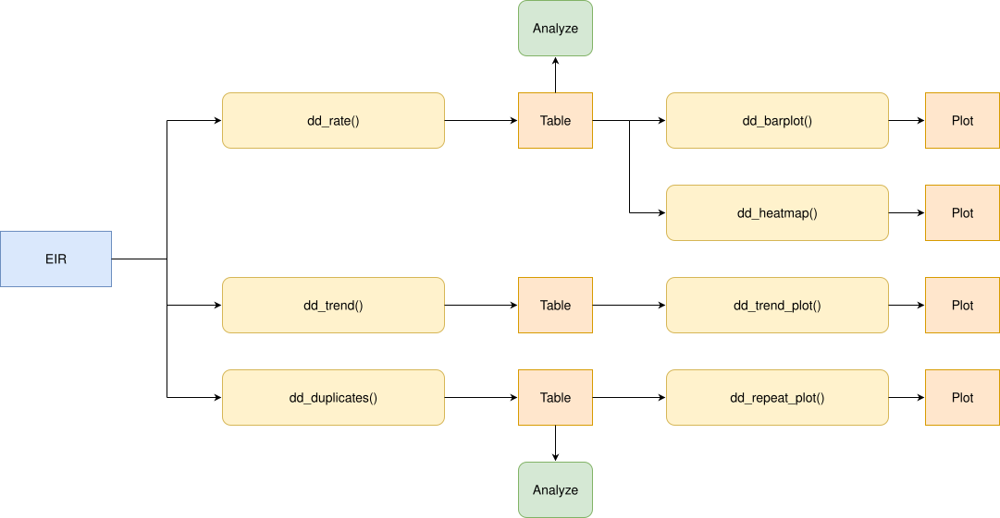
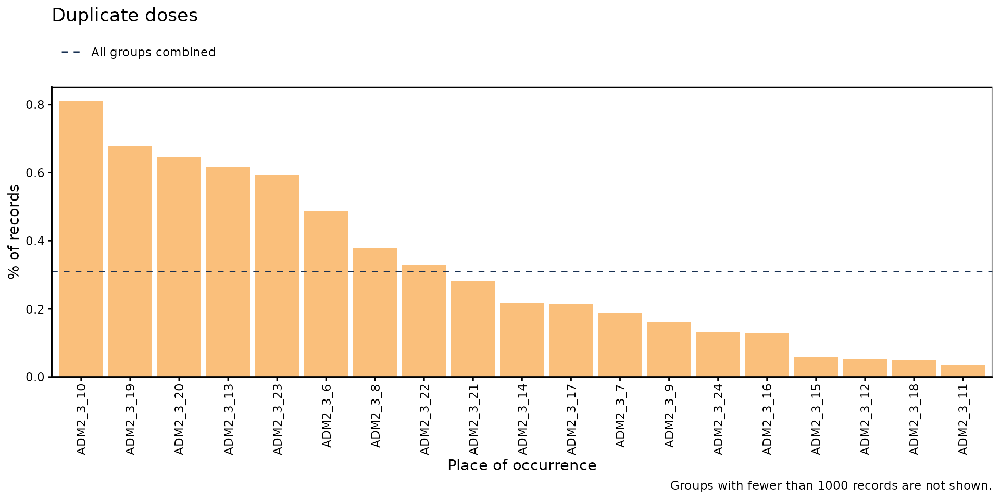
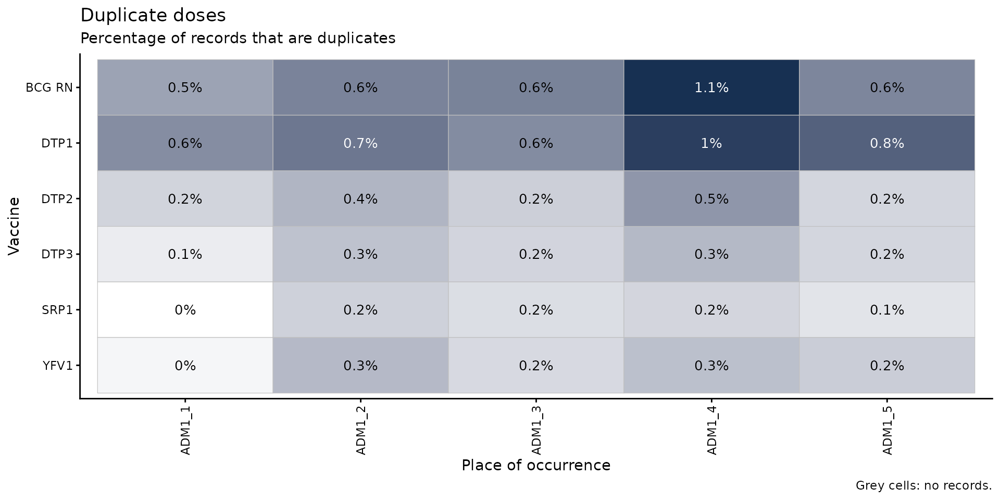
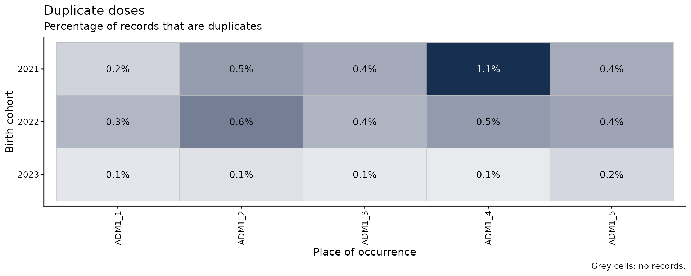
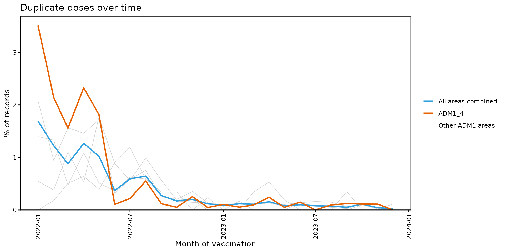
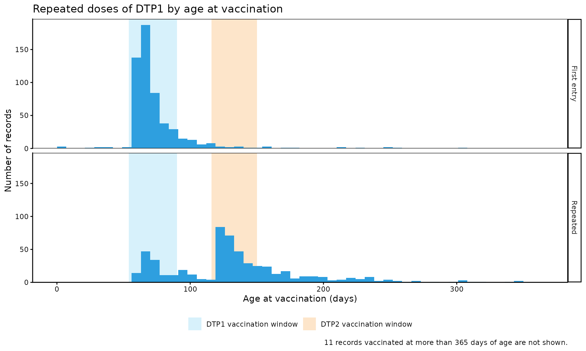

Duplicate Doses
PAHO/CIM
November 9, 2026
Source:vignettes/articles/en/duplicate_doses_en.Rmd
duplicate_doses_en.RmdRationale
Each dose a person receives should be registered exactly once in the Electronic Immunization Registry (EIR). In practice, the same dose is often registered more than once for the same person. Every extra record inflates the number of doses administered, so it biases dose-based coverage upwards, and it distorts any analysis that relies on the dose number, such as dose sequence or complete schedule analyses.
The duplicate doses module compares all the records of the same person and dose, and classifies each extra record according to when and where it was registered:
- Duplicate: the extra record has the same vaccination date and place of occurrence as an earlier record, that is, the same vaccination event registered more than once.
- Repeated: the extra record has a different vaccination date or place of occurrence, that is, the same dose registered at a different moment in time or in a different place.
These categories describe how the records match, not why the dose was registered more than once. Both can be caused by data entry errors (e.g., a record entered twice, data loaded twice when migrating from an older system, or a dose registered with the wrong dose number) or by programmatic errors (e.g., a dose administered twice because the person’s vaccination history was not checked). The plots and the record-level table of this module help investigate these possible causes.
Since duplicate and repeated records are a data quality problem of each vaccination event, all results refer to the place of occurrence of the vaccination event, not to the place of residence.
Note
All functions used for duplicate dose analyses within immunABC begin with the
dd_prefix.
Glossary
Political Geographic Boundaries
Throughout this vignette, we will make reference to different levels of political geographic boundaries. These levels are defined by the country/territory and can have different names from country to country. immunABC is agnostic to these names and requires the user to recode their variable names to fit the immunABC structure.
Namely, immunABC can distinguish three administrative levels, which listed from top to bottom level are: ADM0, ADM1 and ADM2.
- ADM0: The country. This is the top-most administrative level.
- ADM1: The first geographic subdivision in the country. ADM0 contains several ADM1 subdivisions.
- ADM2: The second geographic subdivision in the country. Each ADM1 contains several ADM2 subdivisions.
Duplication Categories
All the records of the same person (ID) and dose
(dose) are compared in order of vaccination date. The first
record is considered the legitimate one, and each later record is
classified by comparing it with the earlier ones:
-
FIRST_ENTRY: the first record of that person and dose. It is never counted as a problem. -
DUPLICATE: sameID,dose,date_vax,ADM1_occurrenceandADM2_occurrenceas an earlier record. -
REPEATED: sameIDanddoseas an earlier record, but a differentdate_vaxor place of occurrence.
Only the extra records are counted, so a dose registered three times counts as two. For example, a person with DTP1 registered three times:
date_vax |
Place of occurrence | Category | Why |
|---|---|---|---|
| January 5 | ADM2_1_1 |
FIRST_ENTRY |
First record of this person and dose. |
| February 10 | ADM2_1_1 |
REPEATED |
Same dose, but on a different date. |
| February 10 | ADM2_1_1 |
DUPLICATE |
Identical to the previous record. |
Note that a record with the same date as an earlier one but a
different place of occurrence is REPEATED, not
DUPLICATE, since the same dose may have been registered by
two different vaccination sites.
Records Not Evaluated
Records missing ID, dose,
date_vax, ADM1_occurrence or
ADM2_occurrence do not contain enough information to tell
whether they match another record, so they are not evaluated
(NA and empty or whitespace-only text count as missing).
The functions show a message with the number of records excluded.
Usage
Load Data
The functions in this module require your EIR
dataset in the standard immunABC format.
dd_repeat_plot() can optionally use a vaccination
schedule to show the vaccination window of each dose.
EIR
The immunabc::immunABC.EIR data frame provides a
simulated, nominal-level table representing individual vaccination
events from an Electronic Immunization Registry (EIR). Each row
corresponds to a single vaccination act for a person.
immunABC.EIR %>% head() %>% kable(caption = "Example Electronic Immunization Registry")| ID | date_birth | date_vax | ADM1_residence | ADM2_residence | ADM1_occurrence | ADM2_occurrence | dose |
|---|---|---|---|---|---|---|---|
| 191997 | 2023-08-08 | 2023-12-26 | ADM1_4 | ADM2_4_35 | ADM1_4 | ADM2_4_35 | DTP2 |
| 212189 | 2023-12-20 | 2023-12-26 | ADM1_5 | ADM2_5_61 | ADM1_5 | ADM2_5_61 | BCG RN |
| 118063 | 2022-09-15 | 2023-12-26 | ADM1_2 | ADM2_2_5 | ADM1_2 | ADM2_2_5 | DTP1 |
| 118063 | 2022-09-15 | 2023-12-26 | ADM1_2 | ADM2_2_5 | ADM1_2 | ADM2_2_5 | YFV1 |
| 130751 | 2022-10-27 | 2023-12-12 | ADM1_5 | ADM2_5_55 | ADM1_5 | ADM2_5_55 | YFV1 |
| 136532 | 2021-09-21 | 2023-12-26 | ADM1_3 | ADM2_3_12 | ADM1_3 | ADM2_3_12 | SRP1 |
-
ID: Unique person identification number. -
date_birth: Date of birth of person. -
date_vax: Date of vaccination event. -
ADM1_residence/ADM2_residence: First and second geographic administrative levels of residence. -
ADM1_occurrence/ADM2_occurrence: First and second geographic administrative levels where the vaccination occurred. -
dose: Combined variable representing vaccine type and dose number (e.g., DTP1).
Vaccination schedule
The immunabc::immunABC.schedule data frame defines the
age at which each dose should be administered, in days.
immunABC.schedule %>% kable(caption = "Example vaccination schedule")| dose | age_schedule | age_schedule_low | age_schedule_high |
|---|---|---|---|
| SRP1 | 365 | 360 | 420 |
| DTP1 | 60 | 54 | 90 |
| DTP2 | 120 | 116 | 150 |
| DTP3 | 180 | 176 | 210 |
| BCG RN | 0 | 0 | 28 |
| YFV1 | 365 | 360 | 420 |
-
dose: Combined variable representing vaccine type and dose number (e.g., DTP1). -
age_schedule: Recommended age of vaccination, in days. -
age_schedule_low/age_schedule_high: Lower and upper limits of the vaccination window, in days.
Duplicate Doses Analysis
Expected Workflow
The dd_ suite contains seven functions, organized in
three pipelines:
-
dd_rate()— computes the percentage of duplicate and repeated records, by geographic level and optionally by dose or birth cohort.-
dd_barplot()— visualizes the output ofdd_rate()as a bar chart. -
dd_heatmap()— visualizes the output ofdd_rate()as a heatmap of geographic areas against doses or birth cohorts.
-
-
dd_trend()— computes the percentage of duplicate records by month of vaccination.-
dd_trend_plot()— visualizes the output ofdd_trend()as a line plot.
-
-
dd_duplicates()— lists every record of each dose registered more than once, for record-level review and correction.-
dd_repeat_plot()— compares the age at vaccination of the first entries and the repeated records of a dose.
-
The figure below shows the expected workflow.

Step 1 — Compute duplicate and repeated records with
dd_rate()
dd_rate() classifies every record and returns, for each
group, the number and percentage of DUPLICATE and
REPEATED records. The denominator (total) is
every evaluated record in the group, including the first entries and
records of doses registered only once.
dd_rate(data.EIR = immunABC.EIR) %>%
kable(digits = 2, caption = "Duplicate and repeated records at the national level")| duplication | n | total | rate |
|---|---|---|---|
| DUPLICATE | 1816 | 492688 | 0.37 |
| REPEATED | 1314 | 492688 | 0.27 |
Results can be disaggregated geographically with
geo_level, and by one additional variable with
disaggregate_by: "dose" or
"birth_cohort" (year of birth).
rate_adm1 <- dd_rate(
data.EIR = immunABC.EIR,
geo_level = "ADM1"
)
rate_adm1 %>% kable(digits = 2, caption = "Duplicate and repeated records by ADM1 of occurrence")| ADM1 | duplication | n | total | rate |
|---|---|---|---|---|
| ADM1_1 | DUPLICATE | 34 | 14099 | 0.24 |
| ADM1_1 | REPEATED | 33 | 14099 | 0.23 |
| ADM1_2 | DUPLICATE | 527 | 114336 | 0.46 |
| ADM1_2 | REPEATED | 290 | 114336 | 0.25 |
| ADM1_3 | DUPLICATE | 912 | 294763 | 0.31 |
| ADM1_3 | REPEATED | 815 | 294763 | 0.28 |
| ADM1_4 | DUPLICATE | 253 | 44965 | 0.56 |
| ADM1_4 | REPEATED | 131 | 44965 | 0.29 |
| ADM1_5 | DUPLICATE | 90 | 24525 | 0.37 |
| ADM1_5 | REPEATED | 45 | 24525 | 0.18 |
rate_dose <- dd_rate(
data.EIR = immunABC.EIR,
disaggregate_by = "dose"
)
rate_dose %>%
filter(duplication == "DUPLICATE") %>%
kable(digits = 2, caption = "Duplicate records by dose")| dose | duplication | n | total | rate |
|---|---|---|---|---|
| BCG RN | DUPLICATE | 536 | 82224 | 0.65 |
| DTP1 | DUPLICATE | 541 | 83356 | 0.65 |
| DTP2 | DUPLICATE | 230 | 81553 | 0.28 |
| DTP3 | DUPLICATE | 190 | 82080 | 0.23 |
| SRP1 | DUPLICATE | 136 | 80504 | 0.17 |
| YFV1 | DUPLICATE | 183 | 82971 | 0.22 |
Parameters accepted
-
data.EIR: EIR data frame in immunABC format. -
geo_level: Geographic level of occurrence:"ADM0"(default),"ADM1", or"ADM2". -
disaggregate_by: One additional variable to disaggregate by:"dose"or"birth_cohort". DefaultNULL(no additional disaggregation). With"birth_cohort", records with nodate_birthare excluded, with a message. -
vaccines: Character vector of doses to include, e.g.c("DTP1", "DTP2", "DTP3"). This is only a filter: usedisaggregate_by = "dose"to see results by dose. DefaultNULLuses all doses. -
birth_cohorts: Numeric vector of birth cohort year(s) to filter to. This is only a filter: usedisaggregate_by = "birth_cohort"to see results by cohort. DefaultNULLuses all available cohorts.
The output contains one row for each duplication
category (DUPLICATE and REPEATED) in each
group, with the number of records in that category (n), the
total number of evaluated records in the group (total) and
the percentage (rate).
Step 2 — Visualize duplicate records with
dd_barplot()
The output of dd_rate() can be passed directly to
dd_barplot(). Geographic areas are shown on the x-axis if
present, otherwise doses or birth cohorts. When the data has both, doses
or birth cohorts become panels. When showing rates, a dashed line shows
the rate of all groups combined.
dd_barplot(data = rate_adm1)
By default, the plot shows the percentage of DUPLICATE
records. Use duplication = "repeated" to show
REPEATED records instead, and value = "n" to
show the number of records instead of their percentage:
dd_barplot(
data = rate_dose,
duplication = "repeated",
value = "n"
)
At the ADM2 level, within_ADM1 focuses on the areas of
one or several ADM1, and min_total hides the bars with few
records, since their rates can be misleading:
rate_adm2 <- dd_rate(
data.EIR = immunABC.EIR,
geo_level = "ADM2"
)
dd_barplot(
data = rate_adm2,
within_ADM1 = "ADM1_3",
min_total = 1000
)
Parameters accepted
-
data: Output ofdd_rate(). -
value: What to show on the y-axis:"rate"(default) or"n". -
duplication: Which records to show:"duplicate"(default) or"repeated". -
within_ADM1: Character vector to filter to specific ADM1 units whengeo_level = "ADM2". Default:NULL. -
min_total: Minimum number of records for a bar to be shown. Hidden bars still count towards the dashed line. Default:NULL(all bars shown).
Interpretation
Duplicate records are usually a small percentage of all records, so
the y-axis is scaled to the data instead of 0 to 100%. Rates and numbers
answer different questions: value = "rate" shows where the
problem is proportionally worst, which points to registration practices
worth reviewing, while value = "n" shows where most records
need correcting, which is where a cleanup effort will have the largest
impact. Bars well above the dashed line are the first candidates for
review.
Step 3 — Combine two disaggregations with
dd_heatmap()
dd_heatmap() shows the output of dd_rate()
for each geographic area (columns) against each dose or birth cohort
(rows), so data must come from dd_rate() with
geo_level at "ADM1" or "ADM2" and
a value for disaggregate_by.
rate_adm1_dose <- dd_rate(
data.EIR = immunABC.EIR,
geo_level = "ADM1",
disaggregate_by = "dose"
)
dd_heatmap(data = rate_adm1_dose)
By birth cohort, filtering to the most recent cohorts with
birth_cohorts:
rate_adm1_cohort <- dd_rate(
data.EIR = immunABC.EIR,
geo_level = "ADM1",
disaggregate_by = "birth_cohort",
birth_cohorts = 2021:2023
)
dd_heatmap(data = rate_adm1_cohort)
Parameters accepted
-
data: Output ofdd_rate()withgeo_levelat"ADM1"or"ADM2"and a value fordisaggregate_by. -
value: What to show in the cells:"rate"(default) or"n". -
duplication: Which records to show:"duplicate"(default) or"repeated". -
within_ADM1: Character vector to filter to specific ADM1 units whengeo_level = "ADM2". Default:NULL. -
min_total: Minimum number of records for a cell to be filled. Other cells are grey and blank. Default:NULL(all cells filled). -
digits: Number of decimal digits in the cells whenvalue = "rate". Default:1. -
show_numbers: Logical, defaults toTRUE. Whether to show the number in each cell, or a color legend instead. Set it toFALSEwhen there are too many cells to read (e.g., at the ADM2 level).
Interpretation
A dark row across all areas points to a problem of that dose or
cohort everywhere, for example a dose that is systematically registered
twice by the information system. A dark column points to a problem of
that area across all doses, which suggests a local registration
practice. A single dark cell is a problem specific to one area and one
dose or cohort. In the example, ADM1_4 has the highest
rates for most doses, and BCG RN and DTP1 have
the highest rates in every area.
Step 4 — Follow duplicate records over time with
dd_trend() and dd_trend_plot()
dd_trend() performs the same calculation as
dd_rate(), but by month of vaccination
(month_vax, the first day of each month), to spot trends
over time. Only DUPLICATE records are included: repeated
records are better explored with dd_repeat_plot() (see Step
6).
trend_adm1 <- dd_trend(
data.EIR = immunABC.EIR,
geo_level = "ADM1"
)
trend_adm1 %>% head() %>% kable(digits = 2, caption = "Duplicate records by ADM1 and month of vaccination")| ADM1 | month_vax | duplication | n | total | rate |
|---|---|---|---|---|---|
| ADM1_1 | 2022-01-01 | DUPLICATE | 0 | 484 | 0.00 |
| ADM1_1 | 2022-02-01 | DUPLICATE | 1 | 558 | 0.18 |
| ADM1_1 | 2022-03-01 | DUPLICATE | 3 | 590 | 0.51 |
| ADM1_1 | 2022-04-01 | DUPLICATE | 3 | 468 | 0.64 |
| ADM1_1 | 2022-05-01 | DUPLICATE | 2 | 510 | 0.39 |
| ADM1_1 | 2022-06-01 | DUPLICATE | 5 | 555 | 0.90 |
dd_trend_plot() draws all areas combined as a
highlighted line, and each geographic area as a thin grey line for
context. Up to 5 areas can be highlighted in color with
highlight:
dd_trend_plot(
data = trend_adm1,
highlight = "ADM1_4"
)
Parameters accepted
-
data.EIR: EIR data frame in immunABC format. -
geo_level: Geographic level of occurrence:"ADM0"(default),"ADM1", or"ADM2". -
vaccines: Character vector of doses to include. DefaultNULLuses all doses. -
birth_cohorts: Numeric vector of birth cohort year(s) to filter to. DefaultNULLuses all available cohorts.
-
data: Output ofdd_trend(). -
value: What to show on the y-axis:"rate"(default) or"n". With"n", all areas combined is the sum of all areas, so it may be much larger than any single area. -
highlight: Up to 5 geographic areas to highlight in color. Only available whendatais disaggregated by ADM1 or ADM2. Default:NULL. -
within_ADM1: Character vector to filter to specific ADM1 units whengeo_level = "ADM2". All areas combined then refers to those areas only. Default:NULL. -
min_total: Minimum number of records for an area to be shown in a given month, leaving gaps in the lines otherwise. Useful because rates based on few records can be misleading and stretch the y-axis. Default:NULL(all months shown).
Interpretation
Data entry errors tend to be spread evenly over time, so when
duplicate records are concentrated in a few months, the records from
those months may have been entered twice, for example when loading
historical data from an older system into the EIR, or when a batch of
paper records was digitized twice. In the example, duplicates are
clearly concentrated in the first half of 2022, particularly in
ADM1_4, and almost disappear afterwards. A sudden increase
at a later date, on the other hand, may point to a change in the
information system or in registration practices.
Step 5 — Inspect individual records with
dd_duplicates()
dd_duplicates() returns a record-level table with every
record of each dose registered more than once for the same person,
including the FIRST_ENTRY, so that later records can be
compared against it. Groups with the most copies are shown first.
duplicates_df <- dd_duplicates(data.EIR = immunABC.EIR)
duplicates_df %>%
filter(dose == "DTP1", n_copies == 2) %>%
head(6) %>%
kable(caption = "Sample of DTP1 doses registered twice")| ID | date_birth | dose | date_vax | ADM1_occurrence | ADM2_occurrence | group | copy | n_copies | days_since_first_entry | duplication |
|---|---|---|---|---|---|---|---|---|---|---|
| 11254 | 2021-10-07 | DTP1 | 2022-01-05 | ADM1_2 | ADM2_2_5 | 168 | 1 | 2 | NA | FIRST_ENTRY |
| 11254 | 2021-10-07 | DTP1 | 2022-05-11 | ADM1_3 | ADM2_3_15 | 168 | 2 | 2 | 126 | REPEATED |
| 12223 | 2021-10-18 | DTP1 | 2022-01-10 | ADM1_3 | ADM2_3_6 | 170 | 1 | 2 | NA | FIRST_ENTRY |
| 12223 | 2021-10-18 | DTP1 | 2022-06-14 | ADM1_3 | ADM2_3_6 | 170 | 2 | 2 | 155 | REPEATED |
| 12415 | 2021-10-25 | DTP1 | 2022-01-21 | ADM1_3 | ADM2_3_7 | 171 | 1 | 2 | NA | FIRST_ENTRY |
| 12415 | 2021-10-25 | DTP1 | 2022-03-17 | ADM1_3 | ADM2_3_7 | 171 | 2 | 2 | 55 | REPEATED |
Parameters accepted
-
data.EIR: EIR data frame in immunABC format. -
vaccines: Character vector of doses to include. DefaultNULLuses all doses. -
birth_cohorts: Numeric vector of birth cohort year(s) to filter to. DefaultNULLuses all available cohorts.
Besides the original columns of each record, the output includes
group (a number identifying all the records of the same
person and dose), copy (the position of the record within
its group, in date order), n_copies (the number of records
in the group), days_since_first_entry (days between the
record and the FIRST_ENTRY of its group, NA
for the FIRST_ENTRY itself) and duplication.
This table can be exported for record-level review and correction
workflows. For example, days_since_first_entry tells apart
REPEATED records registered on the same day in two
different places (days_since_first_entry = 0) from those
registered weeks or months after the first entry.
Step 6 — Explore the possible causes of repeated records with
dd_repeat_plot()
dd_repeat_plot() takes the output of
dd_duplicates() and, for a single dose, compares the age at
vaccination of the FIRST_ENTRY of each group with repeats
(top panel) against the age at vaccination of the REPEATED
records (bottom panel). Passing data.schedule shades the
vaccination window of the doses in schedule_vaccines.
dd_repeat_plot(
data = duplicates_df,
vaccine = "DTP1",
max_age = 365,
data.schedule = immunABC.schedule,
schedule_vaccines = c("DTP1", "DTP2")
)
Use geo_level to split the panels by geographic area of
occurrence, which shows whether the pattern is the same everywhere:
dd_repeat_plot(
data = duplicates_df,
vaccine = "DTP1",
geo_level = "ADM1",
max_age = 365,
binwidth = 14,
data.schedule = immunABC.schedule,
schedule_vaccines = c("DTP1", "DTP2")
)
Parameters accepted
-
data: Output ofdd_duplicates(). -
vaccine: The single dose to show, e.g."DTP1". -
geo_level: Geographic level of occurrence to split the panels by:"ADM0"(default, no split),"ADM1", or"ADM2". -
within_ADM1: Character vector to filter to specific ADM1 units of occurrence. Default:NULL. -
binwidth: Width of each bar of the histogram, in days. Default:7(one week). -
max_age: Maximum age at vaccination to show on the x-axis, in days. The number of records beyond it is given in the caption. Default:NULL(all ages shown). -
data.schedule: Vaccination schedule data frame in immunABC format, used to shade vaccination windows. Default:NULL(no windows shown). -
schedule_vaccines: Up to 3 doses whose vaccination window is shaded. Only used withdata.schedule. DefaultNULLshades the window ofvaccine.
Records with no date_birth, or with
date_vax before date_birth, have no valid age
at vaccination, so they are excluded, with a message. The Date Consistency
Comparison module can help investigate the latter.
Interpretation
The shape of the bottom panel hints at the cause of the repeats:
- Repeats at the age of the next dose: if the repeats of DTP1 are concentrated in the DTP2 vaccination window, as in the example, the second record is most likely a DTP2 dose registered as DTP1. These people will probably appear with a skipped DTP2 in the Dose Sequence Comparison module.
- Repeats shortly after the first entry, within the same window: the dose may have been registered again at a follow-up visit, or administered twice because the person’s vaccination history was not checked.
- Repeats spread over all ages: the records may belong to two different people linked to the same ID, which is a record linkage problem.
Summary
The dd_ module provides a complete pipeline for
detecting doses registered more than once in EIR data, telling apart
DUPLICATE records (the same vaccination event registered
more than once, with the same date and place) from REPEATED
records (the same dose registered on a different date or in a different
place). dd_rate(), dd_barplot() and
dd_heatmap() give a geographic overview by dose or birth
cohort, dd_trend() and dd_trend_plot() show
when duplicates were registered, and dd_duplicates() and
dd_repeat_plot() allow record-level inspection and help
identify the causes of repeated records. Since duplicate and repeated
records bias coverage, dropout and every analysis that relies on dose
numbers, we recommend running this module before the other modules of
immunABC.